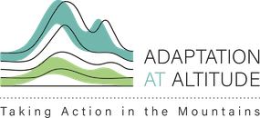
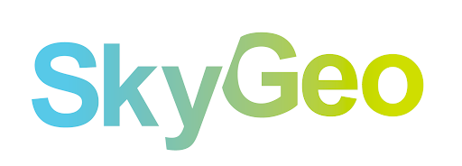

Mapworks is a small geoinformatics studio by Koko Alberti
Based out of The Hague, we have over 15 years of experience developing full stack web applications and working on a wide range of projects related to geoinformatics, data visualization, and spatial analytics.
Occasionally there is space for new ventures or assignments. Get in touch via info@mapworks.nl for more information or possible collaborations.
Portfolio
Geofolio: Your on-demand atlas (2018-present)
Access to environmental data and simple standardised analysis in agriculture, nature conservation, or sustainability is difficult if you don't have any GIS expertise.
Geofolio is an on-demand atlas that solves this problem through a radical simplification: Users just select an area on Earth that they're interested in, Geofolio then automatically generates a factsheet about that area containing basic information about land cover, elevation, hydrology, soils, and crops.
Risk assessment mapping and data visualization for The Sustainable Vanilla Initiative (2023-present)
Developed a risk assessment reporting service for the Sustainable Vanilla Initiative, where members can assess sustainability risks and exposure to particular threats in their supply chain. Also completed various data visualization assignments for publication-ready maps of SVI member data.
Geodata challenge by The Netherlands Space Office (2024)
Participated in both rounds of the geodata challenge by The Netherlands Space Office to develop interactive landscape reports on the Geofolio platform for use by organizations such as IDH and Dutch embassies.
Front-end mapping and data visualization (2024)
Development work on a front-end web mapping application for visualizing projected production data of Dutch offshore wind farms.
Mountains uncovered: Intercomparable maps and statistics for 100 selected global mountain ranges (2023)
Together with the Mountain Research Initiative and Adaptation at Altitude we developed custom factsheets with intercomparable maps and statistics on global mountain ranges. The Geofolio platform was used for data processing and visualization, and we created a publication of the factsheets as PDF documents for 100 different mountain ranges across the world.

Various assignments developing web mapping applications, data visualizations, and processing pipelines (2022)
Software development work on various dashboarding applications, web viewers, and internal data processing applications.

Detecting deforestation and land cover change hotspots in commodity sourcing areas (2021)
We developed a methodology to detect and analyse deforestation and land use change hotspots based on data by Global Forest Watch, Mapbiomas, Copernicus Land Cover Products, and Planet satellite imagery.
Snapspace: A simple collaboration space for groups (2018-2020)
Snapspace was a simple ephemeral online collaboration space for groups, where you could share documents, images, messages, and events.
Other expertise:
- Consulting and software development for several remote sensing companies in The Netherlands to develop web mapping applications, digital cartography, geodata dashboards, decision support systems, or processing pipelines for satellite data.
- Design and data processing pipelines for parametric insurance products and drought monitoring based on satellite data.
- A selection of online technical articles such a very popular guide to GeoTIFF compression and optmization, georeferencing and digitizing old maps, working with geospatial data on Amazon Web Services, and others.
- Design and development of web-based uncertainty visualizations, an interactive spatial modelling environment, and a fieldwork e-learning environment for the Department of Physical Geography at Utrecht University.